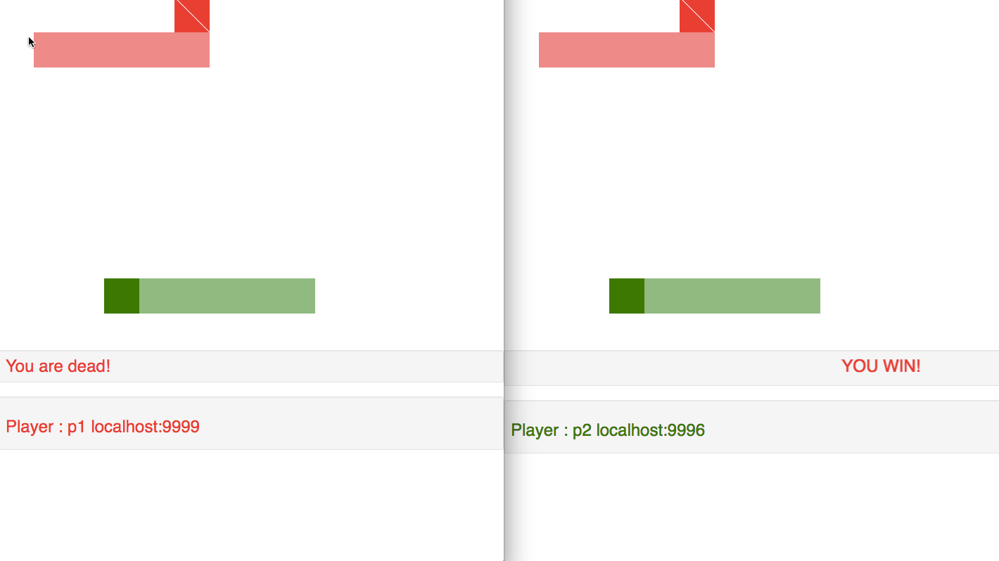

GoTron
2016Peer-to-peer Tron game with a centralized matchmaking server
This peer-to-peer game is an alternate design to conventional games that uses an exclusive central server. It allows for a larger bandwidth by sharing the load with its peers and elimnates the single-point of failure in the single server model while maintaning game state consistency.
Players are able to control their characters in the tron game while also see their peer's movement updated near real time on their respective screens. The usual rules of a tron game applies and players will see the same winner across all screens.